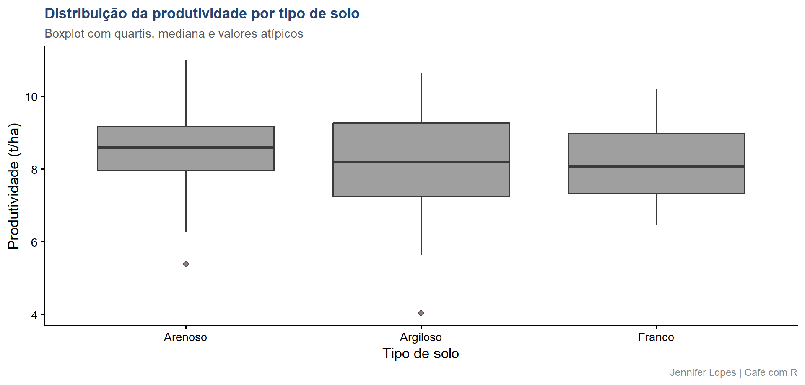
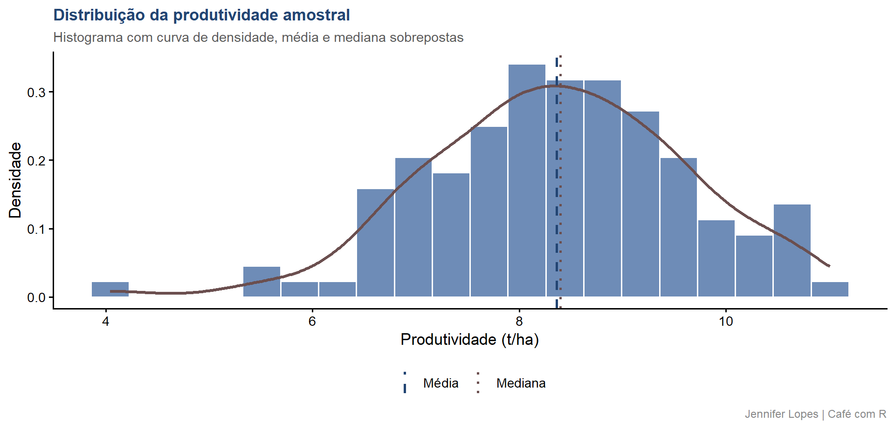
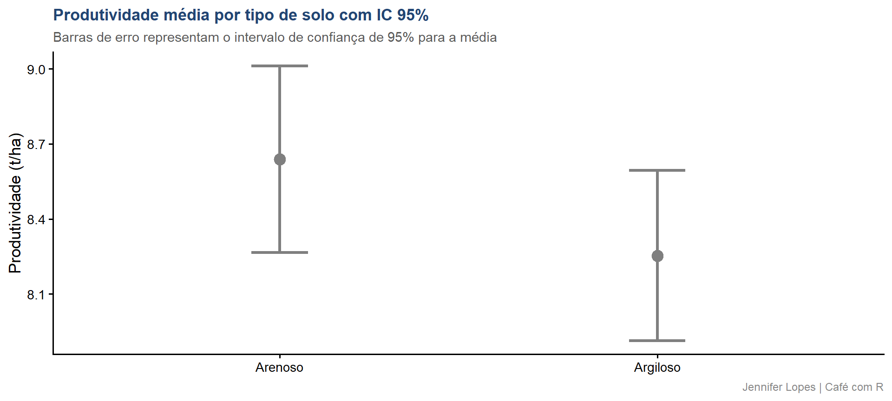
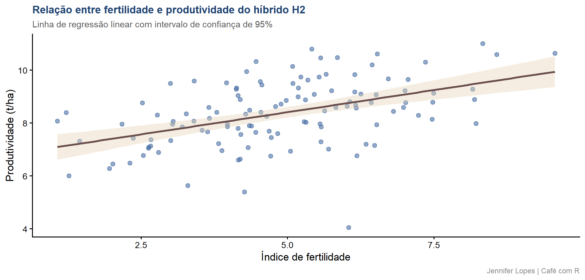
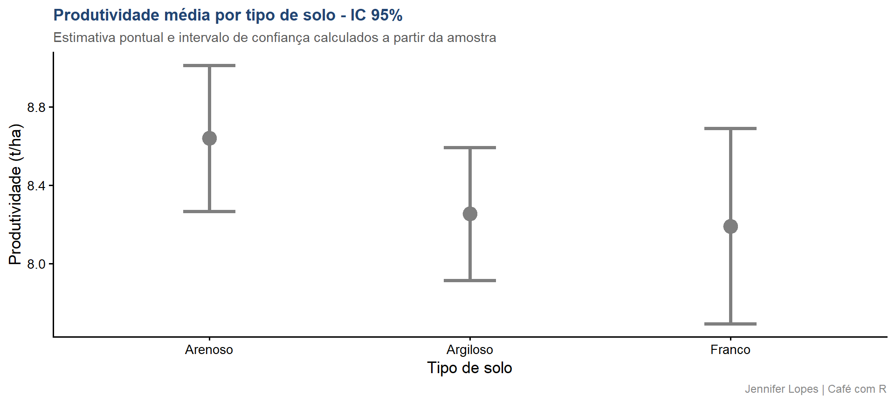

Aula 27. Estatística Descritiva e Inferencial
Fundamentos, distinções e aplicação integrada no R
Democratização
Esta aula continua diretamente da Aula 26. Os dados simulados são os mesmos: produtividade do híbrido H2 em 10.000 parcelas agronômicas. A amostra de 120 parcelas extraída anteriormente é reutilizada aqui para garantir continuidade nos resultados.

Acompanhe o Café com R

Objetivos da aula
- Distinguir estatística descritiva e inferencial com precisão conceitual
- Calcular e interpretar medidas de tendência central, dispersão e posição
- Identificar e visualizar a forma da distribuição de uma variável
- Aplicar estimação por intervalo e teste de hipóteses com o tidyverse
- Integrar descritiva e inferencial em um fluxo de análise completo
- Reconhecer os erros de interpretação mais frequentes em cada abordagem
Bloco 1
O que cada estatística responde
Estatística Descritiva: definição
A estatística descritiva organiza, resume e apresenta os dados observados. Seu escopo é restrito ao conjunto de dados disponível - ela não extrapola para além do que foi medido.
Pergunta que responde: o que os dados mostram?
No contexto agronômico:
A produtividade média das 120 parcelas amostradas é uma medida descritiva. Ela descreve aquelas 120 parcelas e apenas elas.
Important
Atenção: a estatística descritiva não permite generalizar os resultados para a população. Afirmar que “o híbrido H2 produz em média 8,4 t/ha” com base apenas na descrição da amostra é um erro de escopo. Essa generalização requer inferência.
Estatística Inferencial: definição precisa
A estatística inferencial usa os dados da amostra para fazer afirmações sobre a população, quantificando a incerteza dessas afirmações por meio de probabilidades.
Pergunta que responde: o que os dados permitem concluir sobre a população?
No contexto agronômico:
O intervalo de confiança para a produtividade média do híbrido H2, calculado a partir das 120 parcelas, é uma afirmação inferencial - ela se dirige ao parâmetro populacional \(\mu\), não à amostra.
Important
Atenção: inferência sem descritiva é análise cega kkkkkk. A exploração descritiva prévia é o que permite verificar pressupostos, detectar anomalias e tomar decisões metodológicas antes de aplicar qualquer teste.
Comparação: descritiva x inferencial
| Dimensão | Descritiva | Inferencial |
|---|---|---|
| Escopo | Os dados disponíveis | A população de origem |
| Produto | Resumo, tabela, gráfico | Estimativa, IC, p-valor |
| Incerteza | Não quantifica | Quantifica formalmente |
| Extrapolação | Não realiza | É o objetivo |
| Exemplo | Média amostral \(\bar{x}\) | IC para \(\mu\) |
| Função no R | summarise(), ggplot2 |
t.test(), lm() |
Bloco 2
Estatística Descritiva
Medidas de tendência central
As medidas de tendência central descrevem o valor em torno do qual os dados se concentram.
Média aritmética \(\bar{x}\): soma dos valores dividida pelo número de observações. Sensível a valores extremos.
Mediana: valor que divide a distribuição ao meio. Robusta a valores extremos.
Moda: valor mais frequente. Relevante em variáveis categóricas ou discretas.
Important
Atenção: quando a distribuição é assimétrica, média e mediana divergem.
- Usar apenas a média nesse caso produz uma descrição distorcida do centro dos dados. Reporte sempre as duas.
Código: tendência central
Output: tendência central
# A tibble: 1 × 4
n media mediana dp
<dbl> <dbl> <dbl> <dbl>
1 120 8.36 8.40 1.24- A proximidade entre média e mediana indica que a distribuição desta amostra é aproximadamente simétrica, resultado esperado, dado que os dados foram gerados a partir de uma distribuição normal.
Medidas de dispersão
As medidas de dispersão descrevem a variabilidade dos dados em torno do centro.
| Medida | Definição | Interpretação |
|---|---|---|
| Amplitude | \(x_{max} - x_{min}\) | Alcance total dos dados |
| Variância | \(s^2 = \frac{\sum(x_i - \bar{x})^2}{n-1}\) | Dispersão média ao quadrado |
| Desvio padrão | \(s = \sqrt{s^2}\) | Dispersão na mesma unidade dos dados |
| CV | \(CV = \frac{s}{\bar{x}} \times 100\) | Dispersão relativa à média, em % |
O coeficiente de variação é especialmente útil em experimentos agronômicos para comparar a variabilidade entre variáveis ou experimentos com médias distintas.
Código: dispersão
Output: dispersão
# A tibble: 1 × 5
amplitude variancia dp media cv
<dbl> <dbl> <dbl> <dbl> <dbl>
1 6.97 1.54 1.24 8.36 14.8O CV abaixo de 15% indica variabilidade experimental baixa a moderada - valor referencial comumente adotado em experimentação agronômica para validar a precisão do experimento.
Medidas de posição: quartis e percentis
As medidas de posição descrevem como os dados se distribuem ao longo de sua amplitude.
Quartis dividem a distribuição em quatro partes iguais:
- \(Q_1\) (25°percentil): 25% dos dados estão abaixo deste valor
- \(Q_2\) (50°percentil): coincide com a mediana
- \(Q_3\) (75°percentil): 75% dos dados estão abaixo deste valor
Intervalo interquartil \(IQR = Q_3 - Q_1\): medida de dispersão robusta, usada para identificar valores atípicos.
Código: quartis e percentis
Output: quartis e percentis
# A tibble: 1 × 6
p10 q1 q2 q3 p90 iqr
<dbl> <dbl> <dbl> <dbl> <dbl> <dbl>
1 6.88 7.59 8.40 9.22 9.86 1.63Código: boxplot por tipo de solo
amostra |>
ggplot(aes(x = solo, y = produtividade, fill = solo)) +
geom_boxplot(alpha = 0.75, color = "#3A3A3A", outlier.shape = 21,
outlier.fill = cores_cafe["marrom"], outlier.size = 2) +
scale_fill_manual(values = c(
"Argiloso" = cores_cafe["azul_escuro"],
"Arenoso" = cores_cafe["azul_claro"],
"Franco" = cores_cafe["bege"])) +
labs(
title = "Distribuição da produtividade por tipo de solo",
subtitle = "Boxplot com quartis, mediana e valores atípicos",
x = "Tipo de solo",
y = "Produtividade (t/ha)",
fill = NULL,
caption = "Jennifer Lopes | Café com R") +
tema +
theme(legend.position = "none")Gráfico: boxplot por tipo de solo

Forma da distribuição: assimetria e curtose
A forma da distribuição descreve como os dados se organizam em torno do centro.
Assimetria (skewness): mede o grau de desvio da simetria.
- Assimetria negativa: cauda à esquerda, maioria dos dados à direita
- Simétrica: média \(\approx\) mediana
- Assimetria positiva: cauda à direita, maioria dos dados à esquerda
Curtose (kurtosis): mede a concentração dos dados nas caudas em relação a uma distribuição normal.
Important
Atenção: distribuições com assimetria pronunciada invalidam o uso isolado da média como medida de centro. Verifique sempre a forma antes de descrever os dados com uma única estatística.
Código: distribuição e assimetria
amostra |>
ggplot(aes(x = produtividade)) +
geom_histogram(aes(y = after_stat(density)),
bins = 20, fill = cores_cafe["azul_claro"],
color = "white", alpha = 0.8) +
geom_density(color = cores_cafe["marrom"],
linewidth = 1.2) +
geom_vline(aes(xintercept = mean(produtividade),
linetype = "Média"),
color = cores_cafe["azul_escuro"],
linewidth = 1) +
geom_vline(aes(xintercept = median(produtividade),
linetype = "Mediana"),
color = cores_cafe["marrom"],
linewidth = 1) +
scale_linetype_manual(
values = c("Média" = "dashed", "Mediana" = "dotted")) +
labs(
title = "Distribuição da produtividade amostral",
subtitle = "Histograma com curva de densidade, média e mediana sobrepostas",
x = "Produtividade (t/ha)",
y = "Densidade",
linetype = NULL,
caption = "Jennifer Lopes | Café com R") +
temaGráfico: distribuição e assimetria

A sobreposição entre média e mediana confirma a simetria da distribuição.
A curva de densidade segue o formato esperado de uma distribuição normal.
Bloco 3
Estatística Inferencial
Estimação: pontual e por intervalo
A estimação pontual produz um único valor como aproximação do parâmetro.
\[\hat{\mu} = \bar{x} = \frac{1}{n} \sum_{i=1}^{n} x_i\]
A estimação por intervalo produz uma faixa de valores que, com um nível de confiança especificado, contém o parâmetro:
\[IC_{95\%} = \bar{x} \pm t_{(n-1;\, 0{,}025)} \cdot \frac{s}{\sqrt{n}}\]
A estimação pontual é precisa, mas não quantifica a incerteza. O intervalo de confiança é a forma correta de reportar uma estimativa quando a incerteza amostral precisa ser comunicada.
Código: estimação por IC
Output: IC 95% para a produtividade
# A tibble: 1 × 5
estimativa ic_inf ic_sup erro_padrao n
<dbl> <dbl> <dbl> <dbl> <dbl>
1 8.36 8.14 8.59 0.113 120Interpretação: com base nesta amostra de 120 parcelas, estima-se que a produtividade média populacional do híbrido H2 está entre ic_inf e ic_sup t/ha. A confiança de 95% se refere ao procedimento de estimação - não a este intervalo específico.
Testes de hipóteses: os cinco passos
O teste de hipóteses segue uma estrutura formal invariante, independentemente do teste utilizado:
- Formular as hipóteses - \(H_0\) e \(H_1\) precisam ser definidas antes de ver os dados
- Escolher o teste adequado - depende do tipo de variável, do número de grupos e dos pressupostos
- Calcular a estatística de teste e o p-valor - quantifica a incompatibilidade dos dados com \(H_0\)
- Tomar a decisão - rejeitar ou não rejeitar \(H_0\) com base no nível de significância \(\alpha\)
- Concluir no contexto do problema - a decisão estatística precisa ser traduzida em linguagem substantiva
Exemplo: teste t entre tipos de solo
Hipóteses:
\(H_0: \mu_{Argiloso} = \mu_{Arenoso}\) - não há diferença na produtividade média entre os dois solos
\(H_1: \mu_{Argiloso} \neq \mu_{Arenoso}\) - há diferença na produtividade média entre os dois solos
Nível de significância: \(\alpha = 0{,}05\)
Teste utilizado: teste t de Welch - não assume igualdade de variâncias entre os grupos.
Código: teste t entre solos
amostra_solos <- amostra |>
filter(solo %in% c("Argiloso", "Arenoso"))
resultado_t <- t.test(
produtividade ~ solo,
data = amostra_solos,
var.equal = FALSE,
conf.level = 0.95)
tibble(
estatistica_t = round(resultado_t$statistic, 3),
gl = round(resultado_t$parameter, 1),
p_valor = round(resultado_t$p.value, 4),
ic_inf = round(resultado_t$conf.int[1], 3),
ic_sup = round(resultado_t$conf.int[2], 3),
media_argiloso = round(resultado_t$estimate[1], 3),
media_arenoso = round(resultado_t$estimate[2], 3))Output: teste t entre solos
# A tibble: 1 × 7
estatistica_t gl p_valor ic_inf ic_sup media_argiloso media_arenoso
<dbl> <dbl> <dbl> <dbl> <dbl> <dbl> <dbl>
1 1.54 86.6 0.127 -0.112 0.883 8.64 8.25Código: visualização das médias com IC
amostra_solos |>
group_by(solo) |>
summarise(
media = mean(produtividade),
ic_inf = t.test(produtividade)$conf.int[1],
ic_sup = t.test(produtividade)$conf.int[2],
.groups = "drop") |>
ggplot(aes(x = solo, y = media, color = solo)) +
geom_point(size = 4) +
geom_errorbar(
aes(ymin = ic_inf, ymax = ic_sup),
width = 0.15, linewidth = 1.2) +
scale_color_manual(values = c(
"Argiloso" = cores_cafe["azul_escuro"],
"Arenoso" = cores_cafe["azul_claro"])) +
labs(
title = "Produtividade média por tipo de solo com IC 95%",
subtitle = "Barras de erro representam o intervalo de confiança de 95% para a média",
x = NULL,
y = "Produtividade (t/ha)",
caption = "Jennifer Lopes | Café com R") +
tema +
theme(legend.position = "none")Gráfico: médias com IC 95%

Relação e predição: correlação
A correlação mede a direção e a intensidade da associação linear entre duas variáveis numéricas.
O coeficiente de correlação de Pearson \(r\) varia entre \(-1\) e \(+1\):
| Valor de \(|r|\) | Interpretação convencional |
|---|---|
| \(0{,}00\) a \(0{,}19\) | Associação muito fraca |
| \(0{,}20\) a \(0{,}39\) | Associação fraca |
| \(0{,}40\) a \(0{,}59\) | Associação moderada |
| \(0{,}60\) a \(0{,}79\) | Associação forte |
| \(0{,}80\) a \(1{,}00\) | Associação muito forte |
Important
Atenção: correlação mede associação linear, não causalidade. Duas variáveis podem ter \(r = 0\) e ainda apresentar associação não linear relevante.
Código: correlação entre produtividade e parcela
# Criar variável contínua auxiliar: índice de fertilidade simulado
amostra_cor <- amostra |>
mutate(fertilidade = produtividade * 0.6 +
rnorm(n(), mean = 0, sd = 1.5))
amostra_cor |>
summarise(
r = cor(produtividade, fertilidade,
method = "pearson"),
r2 = r^2,
p_valor = cor.test(produtividade,
fertilidade)$p.value) |>
mutate(across(where(is.numeric), ~ round(.x, 4)))Output: correlação
# A tibble: 1 × 3
r r2 p_valor
<dbl> <dbl> <dbl>
1 0.466 0.217 0Código: regressão linear simples
amostra_cor |>
ggplot(aes(x = fertilidade, y = produtividade)) +
geom_point(color = cores_cafe["azul_claro"],
alpha = 0.6, size = 2.2) +
geom_smooth(method = "lm", se = TRUE,
color = cores_cafe["marrom"],
fill = cores_cafe["bege"],
linewidth = 1.2) +
labs(
title = "Relação entre fertilidade e produtividade do híbrido H2",
subtitle = "Linha de regressão linear com intervalo de confiança de 95%",
x = "Índice de fertilidade",
y = "Produtividade (t/ha)",
caption = "Jennifer Lopes | Café com R") +
temaGráfico: regressão linear simples

Bloco 4
Fluxo Integrado
Descritiva e inferencial no mesmo fluxo
A prática correta de análise de dados não separa as duas abordagens em etapas estanques, ela as integra em sequência lógica:
- Importar e inspecionar - verificar estrutura, tipos e valores ausentes
- Explorar descritivamente - medidas, distribuição, gráficos
- Verificar pressupostos - normalidade, homocedasticidade, independência
- Aplicar inferência - estimação, teste de hipóteses, modelagem
- Interpretar no contexto - traduzir o resultado estatístico em resposta à pergunta original
Código: pipeline completa
Output: descritivo por solo
# A tibble: 3 × 6
solo n media mediana dp cv
<chr> <dbl> <dbl> <dbl> <dbl> <dbl>
1 Arenoso 37 8.64 8.59 1.12 12.9
2 Argiloso 62 8.25 8.20 1.34 16.2
3 Franco 21 8.19 8.07 1.10 13.4Código: IC por tipo de solo
Output: IC por tipo de solo
# A tibble: 3 × 4
solo media ic_inf ic_sup
<chr> <dbl> <dbl> <dbl>
1 Arenoso 8.64 8.27 9.01
2 Argiloso 8.25 7.91 8.59
3 Franco 8.19 7.69 8.69Código: visualização final integrada
amostra |>
group_by(solo) |>
summarise(
media = mean(produtividade),
ic_inf = t.test(produtividade)$conf.int[1],
ic_sup = t.test(produtividade)$conf.int[2],
.groups = "drop") |>
ggplot(aes(x = solo, y = media, color = solo)) +
geom_point(size = 5) +
geom_errorbar(
aes(ymin = ic_inf, ymax = ic_sup),
width = 0.2, linewidth = 1.3) +
scale_color_manual(values = c(
"Argiloso" = cores_cafe["azul_escuro"],
"Arenoso" = cores_cafe["azul_claro"],
"Franco" = cores_cafe["marrom"])) +
labs(
title = "Produtividade média por tipo de solo - IC 95%",
subtitle = "Estimativa pontual e intervalo de confiança calculados a partir da amostra",
x = "Tipo de solo",
y = "Produtividade (t/ha)",
caption = "Jennifer Lopes | Café com R") +
tema +
theme(legend.position = "none")Gráfico: visualização final integrada

Bloco 5
Erros de Interpretação
Erro 1 - Generalizar a partir da descritiva
Descrever a amostra e concluir sobre a população sem inferência é um dos erros mais frequentes em relatórios técnicos.
A média amostral de 8,4 t/ha descreve as 120 parcelas observadas. Afirmar que “o híbrido H2 tem produtividade média de 8,4 t/ha” como fato populacional requer um IC ou um teste - não apenas o
summarise().
Erro 2 - Usar a média em distribuição assimétrica
Quando a distribuição é assimétrica, a média é puxada na direção da cauda. A mediana representa melhor o centro típico dos dados.
Antes de reportar a média como medida-resumo, verifique o histograma e compare média com mediana. Se a diferença for relevante, reporte as duas ou justifique a escolha.
Erro 3 - Pular a descritiva e ir direto ao teste
Aplicar um teste t sem antes verificar a distribuição, detectar valores atípicos ou checar o tamanho dos grupos é uma prática metodologicamente inadequada.
A descritiva não é etapa opcional - é o que permite validar os pressupostos do teste e detectar problemas nos dados antes que eles contaminem a inferência.
Erro 4 - Interpretar p-valor como relevância prática
Um p-valor pequeno indica que os dados são incompatíveis com \(H_0\) ao nível de significância adotado. Não indica que a diferença encontrada é grande, importante ou relevante para a decisão agronômica.
Com amostras suficientemente grandes, diferenças de 0,01 t/ha entre solos produzem p-valores abaixo de 0,001. Sempre reporte o tamanho do efeito junto ao resultado do teste.
Resumo: descritiva e inferencial
| Conceito | Abordagem | Função no R | O que produz |
|---|---|---|---|
| Tendência central | Descritiva | summarise(mean(), median()) |
Valor único |
| Dispersão | Descritiva | summarise(sd(), IQR()) |
Valor único |
| Distribuição | Descritiva | geom_histogram(), geom_density() |
Gráfico |
| Estimação pontual | Inferencial | mean() sobre a amostra |
\(\bar{x}\) |
| Intervalo de confiança | Inferencial | t.test()$conf.int |
\([ic_{inf},\, ic_{sup}]\) |
| Teste de hipóteses | Inferencial | t.test() |
\(t\), gl, p-valor |
| Correlação | Inferencial | cor(), cor.test() |
\(r\), p-valor |
| Regressão | Inferencial | lm(), geom_smooth() |
Coeficientes, IC |
Obrigada!

Continue praticando e explorando.
Esta aula é parte do projeto Café com R. É open source. Use, compartilhe e adapte.
Siga o Café com R
Que cada gole desperte uma nova ideia. Que cada script abra uma nova conversa. Que o Café com R se torne um ponto de encontro nosso.

Jennifer Lopes | Café com R